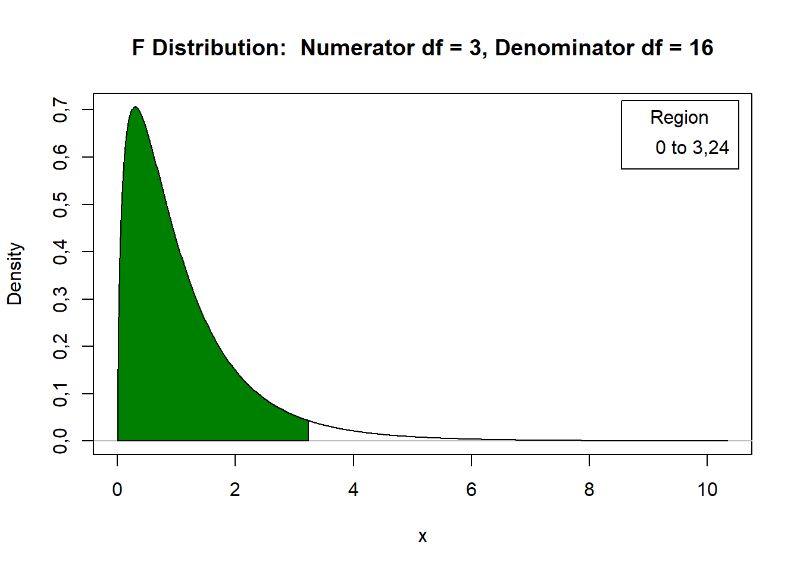
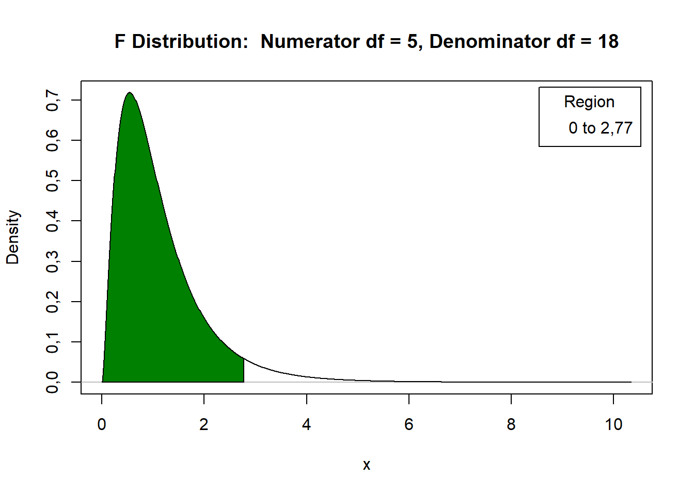

Delineamento inteiramente casualizado
Fundamentos
Exemplo: Vinhedo

Figura 1: Dois experimentos em DIC com quatro repetições de um tratamento (linhas amarelas) e de um controle (linhas azuis), sendo um em um vinhedo pequeno (A) e outro em um vinhedo médio (C). Fonte: Hemant Gohil.
Note que os exemplos consideram uma linha de bordadura entre as linhas.
Em alguns casos o mesmo tratamento ocupa parcelas vizinhas .
Os croquis para os ensaios mostrados em A e C são exibidos em B e D, respectivamente.
Obtendo um croqui para um DIC
- Enumerar as parcelas 1, 2, . . . , \(n\)
- Criar o delineamento sistemático, ou seja, alocar o tratamento 1 às parcelas 1, 2, . . . , \(n_1\) alocar o tratamento 2 às parcelas \(n_1\) + 1, \(n_1\) + 2, . . . , \(n_1\) + \(n_2\) e assim até as repetições do tratamento \(I\).
- Escolha uma permutação de 1, 2, . . . , \(n\) e aplique ao delineamento.
Exemplo
| Ordem Padrão | 1 | 2 | 3 | 4 | 5 | 6 | 7 | 8 | 9 | 10 |
|---|---|---|---|---|---|---|---|---|---|---|
| Variedade | A | A | A | B | B | B | B | C | C | C |
Uma permutação:
| Parcelas | 7 | 1 | 8 | 10 | 3 | 2 | 4 | 6 | 9 | 5 |
|---|---|---|---|---|---|---|---|---|---|---|
| Ordem Padrão | 1 | 2 | 3 | 4 | 5 | 6 | 7 | 8 | 9 | 10 |
E o plano de casualização é dado por:
| Parcelas | 1 | 2 | 3 | 4 | 5 | 6 | 7 | 8 | 9 | 10 |
|---|---|---|---|---|---|---|---|---|---|---|
| Variedade | B | A | C | C | A | A | B | B | C | A |
Análise dos dados
Modelo estatistico
em que:
\(y_{ij}\) é o valor observado na j-ésima repetição do iésimo tratamento, com:
\(i = 1, ... , I\) e
\(j = 1, ... , n_i\)
\(\mu\) é uma constante inerente a todas as observações, geralmente a média geral,
\(\tau_i\) é o efeito do iésimo tratamento,
\(e_{ij}\) é o erro experimental, tal que \(e_{ij} \overset{iid}{\sim} N(0,\sigma^2)\).
\[H_0 : \tau_{1} = \tau_{2} = ... = \tau_{I} = 0\]
\[H_1 = H_a : \tau_{i} \neq 0\]
\[y_{ij} = \alpha_i + e_{ij} \text{(3)}\]
\[H_0 : \alpha_1 = \alpha_2 = ... = \alpha_I = \mu\]
\[H_1 = Ha : \text{pelo um contraste de médias difere de zero}\].
Desse modo, a esperança da variável aleatória \(Y_{ij}\) será
\[E(Y_{ij}) = E(\mu + \tau_i + E_{ij} ) = \mu + \tau_i + 0 = \mu + \tau_i \text(4)\]
Análise de variância
Tabela 1: Demonstração sobre fontes de variação e graus de liberdade
| Fontes de Variação | Graus de liberdade |
|---|---|
| Total | \(n\text{-}1\) |
| Tratamentos | \(I\text{-}1\) |
| Resíduo | \(n\text{-}I\) |
\[\text{Variância} = \sum _{ij} \frac{(yij−\bar{y})^2}{(n−1)} (\text{expressão 1})\]
\[\text{variância} = \displaystyle{\frac{\text{SQ}}{\text{gl}}}(\text{expressão 2})\]
\[\text{F} = \displaystyle{\frac{\text{QM}_{\text{Trat}}}{\text{QM}_{\text{Resíduo}}}}\]
Retomando as hipóteses
\(H_0 : \mu_1 = \mu_2 = ... = \mu_I = 0\)
\(H_1 = Ha\): pelo um contraste de médias difere de zero.Denotamos por Soma de Quadrados do Total (SQ Total) o numerador da expressão 2. Observe que a decomposição mencionada anteriormente será:
\[\displaystyle{\sum_{i=1}^I\sum_{j=1}^Jy_{ij}^2\text-\frac{\left(\sum_{i=1}^I\sum_{j=1}^Jy_{ij}\right)^2}{I\times J}}(\text{expressão 3})\]
As expressões apresentadas em 4 e 5, podem ser reescritas conforme segue.
\[\displaystyle{\frac{1}{J}\sum_{i=1}^I T_i^2 \text- \frac{\left(\sum_{i=1}^I\sum_{j=1}^Jy_{ij}\right)^2}{I\times J}}(\text{expressão 4})\]
SQ Resíduo = SQ Total - SQ Tratamentos.
Os quadrados médios, denotados usualmente por QM, são definidos pelo quociente entre a soma de quadrados e o respectivo número de graus de liberdade relacionados a uma fonte de varição, isto é:
\[\text{QM}_{\text{Trat}} = \displaystyle{\frac{\text{SQ}_\text{Trat}}{\text{gl}_\text{Trat}}}\]
Coeficiente de variação
O CV é adimensional, pode-se comparar a dispersão de variáveis com diferentes unidades de medida.
\[\displaystyle{\text{CV}_{\%} = 100\frac{\hat{\sigma}}{\hat{\mu}} = 100\frac{\sqrt{\text{QM}_{\text{Res}}}}{\bar{y}}}\]
CV \(<\) 10% : baixo
10% \(<\) CV \(>\) 20% :médio
20% \(<\) CV \(>\) 30% :alto
CV \(>\) 30% : muito alto
Exemplo
Tabela 2: produtividade de milho (kg/100m\(^2\)) de quatro diferentes variedades
| (Variedades) | 1 | 2 | 3 | 4 | 5 | total | média |
|---|---|---|---|---|---|---|---|
| A | 25 | 26 | 20 | 23 | 21 | 115 | 23,00 |
| B | 31 | 25 | 28 | 27 | 24 | 135 | 27,00 |
| C | 22 | 26 | 28 | 25 | 29 | 130 | 26,00 |
| D | 33 | 29 | 31 | 34 | 28 | 155 | 31,00 |
Tabela 3: nomenclatura de dados
| (Variedades) | 1 | 2 | 3 | 4 | 5 | total |
|---|---|---|---|---|---|---|
| V1 | y11 | y12 | y13 | y14 | y15 | y1· = T1 |
| V2 | y21 | y22 | y23 | y24 | y25 | y2· = T2 |
| V3 | y31 | y32 | y33 | y34 | y35 | y3· = T3 |
| V4 | y41 | y42 | y43 | y44 | y45 | y4· = T4 |
Análise descritiva:
Tabela 4: Análise descritivas dos dados
| Análise | A | B | C | D |
|---|---|---|---|---|
| Soma | 115,00 | 135,00 | 130,00 | 155,00 |
| Média | 23,00 | 27,00 | 26,00 | 31,00 |
| Variância | 6,50 | 7,50 | 7,50 | 6,50 |
| Desvio-padrão | 2,55 | 2,74 | 2,74 | 2,55 |
Soma de Quadrados total
\[\text{SQ}_{\text{Total}} = \displaystyle{\sum_{i=1}^4\sum_{j=1}^5y_{ij}^2 \text{-} \frac{\left(\sum_{i=1}^4\sum_{j=1}^5y_{ij}\right)^2}{4\times5}}\]
\[ = \displaystyle{25^2 + 26^2 + \ldots + 28^2 \text{-} \frac{535^2}{20}} = 275,75\]
Soma de Quadrados de tratamentos
\[\text{SQ}_{\text{Trat}} = \displaystyle{\frac{1}{5}\sum_{i=1}^4 T_i^2 \text{-} \frac{\left(\sum_{i=1}^4\sum_{j=1}^5y_{ij}\right)^2}{4\times5}}\]
\[= \displaystyle{\frac{1}{5}\left(115^2 + 135^2 + 130^2 + 155^2\right) - \frac{535^2}{20}}= 163,75\]
Soma de Quadrados do Resíduo
\[\text{SQ}_\text{Resíduo} = \text{SQ}_{\text{Total}} \text{-} \text{SQ}_{\text{Trat}}\] \[= 275,75 - 163,75 = 112,00\]
Quadrado médio tratamentos
\[\text{QM}_{\text{Trat}} = \displaystyle{\frac{\text{SQ}_{\text{Trat}}}{\text{gl}_{\text{Trat}}}} = \displaystyle{\frac{163,75}{3}} = 54,5833\]
Quadrado médio do resíduo
\[\text{QM}_{\text{Resíduo}} = \displaystyle{\frac{\text{SQ}_{\text{Resíduo}}}{\text{gl}_{\text{Resíduo}}}}=\displaystyle{\frac{112,00}{16}}= 7,0000\]
F calculado
\[\text{F} = \displaystyle{\frac{\text{QM}_{\text{Trat}}}{\text{QM}_{\text{Resíduo}}}}=\displaystyle{\frac{54,5833}{7,0000}}= 7,80\]
Tabela 5: ANOVA
| Fontes | Graus de liberdade | Soma de Quadrados | Quadrado Médio | Fcal | Ftab |
|---|---|---|---|---|---|
| Tratamentos | 3 | 163,75 | 54,5833 | 7,80 | |
| resıduo | 16 | 112,00 | 7,0000 | ||
| Total | 19 | 275,75 |
F tabelado:
#> Valor crítico da distribuição F: 3,238872#> 1 2 3 4 5 6 7 8 9
#> 1 161,45 199,50 215,71 224,58 230,16 233,99 236,77 238,88 240,54
#> 2 18,51 19,00 19,16 19,25 19,30 19,33 19,35 19,37 19,38
#> 3 10,13 9,55 9,28 9,12 9,01 8,94 8,89 8,85 8,81
#> 4 7,71 6,94 6,59 6,39 6,26 6,16 6,09 6,04 6,00
#> 5 6,61 5,79 5,41 5,19 5,05 4,95 4,88 4,82 4,77
#> 6 5,99 5,14 4,76 4,53 4,39 4,28 4,21 4,15 4,10
#> 7 5,59 4,74 4,35 4,12 3,97 3,87 3,79 3,73 3,68
#> 8 5,32 4,46 4,07 3,84 3,69 3,58 3,50 3,44 3,39
#> 9 5,12 4,26 3,86 3,63 3,48 3,37 3,29 3,23 3,18
#> 10 4,96 4,10 3,71 3,48 3,33 3,22 3,14 3,07 3,02
#> 11 4,84 3,98 3,59 3,36 3,20 3,09 3,01 2,95 2,90
#> 12 4,75 3,89 3,49 3,26 3,11 3,00 2,91 2,85 2,80
#> 13 4,67 3,81 3,41 3,18 3,03 2,92 2,83 2,77 2,71
#> 14 4,60 3,74 3,34 3,11 2,96 2,85 2,76 2,70 2,65
#> 15 4,54 3,68 3,29 3,06 2,90 2,79 2,71 2,64 2,59
#> 16 4,49 3,63 3,24 3,01 2,85 2,74 2,66 2,59 2,54
#> 17 4,45 3,59 3,20 2,96 2,81 2,70 2,61 2,55 2,49
#> 18 4,41 3,55 3,16 2,93 2,77 2,66 2,58 2,51 2,46
#> 19 4,38 3,52 3,13 2,90 2,74 2,63 2,54 2,48 2,42
#> 20 4,35 3,49 3,10 2,87 2,71 2,60 2,51 2,45 2,39| 1 | 2 | 3 | 4 | 5 | 6 | 7 | 8 | 9 | |
|---|---|---|---|---|---|---|---|---|---|
| 1 | 161,447639 | 199,500000 | 215,707345 | 224,583241 | 230,161878 | 233,986000 | 236,768400 | 238,882695 | 240,543255 |
| 2 | 18,512821 | 19,000000 | 19,164292 | 19,246794 | 19,296410 | 19,329534 | 19,353217 | 19,370993 | 19,384826 |
| 3 | 10,127964 | 9,552095 | 9,276628 | 9,117182 | 9,013455 | 8,940645 | 8,886743 | 8,845239 | 8,812300 |
| 4 | 7,708647 | 6,944272 | 6,591382 | 6,388233 | 6,256056 | 6,163132 | 6,094211 | 6,041044 | 5,998779 |
| 5 | 6,607891 | 5,786135 | 5,409451 | 5,192168 | 5,050329 | 4,950288 | 4,875872 | 4,818320 | 4,772466 |
| 6 | 5,987378 | 5,143253 | 4,757063 | 4,533677 | 4,387374 | 4,283866 | 4,206658 | 4,146804 | 4,099016 |
| 7 | 5,591448 | 4,737414 | 4,346831 | 4,120312 | 3,971523 | 3,865969 | 3,787043 | 3,725725 | 3,676675 |
| 8 | 5,317655 | 4,458970 | 4,066181 | 3,837853 | 3,687499 | 3,580580 | 3,500464 | 3,438101 | 3,388130 |
| 9 | 5,117355 | 4,256495 | 3,862548 | 3,633088 | 3,481659 | 3,373754 | 3,292746 | 3,229583 | 3,178893 |
| 10 | 4,964603 | 4,102821 | 3,708265 | 3,478050 | 3,325835 | 3,217175 | 3,135465 | 3,071658 | 3,020383 |
| 11 | 4,844336 | 3,982298 | 3,587434 | 3,356690 | 3,203874 | 3,094613 | 3,012330 | 2,947990 | 2,896223 |
| 12 | 4,747225 | 3,885294 | 3,490295 | 3,259167 | 3,105875 | 2,996120 | 2,913358 | 2,848565 | 2,796375 |
| 13 | 4,667193 | 3,805565 | 3,410534 | 3,179117 | 3,025438 | 2,915269 | 2,832098 | 2,766913 | 2,714356 |
| 14 | 4,600110 | 3,738892 | 3,343889 | 3,112250 | 2,958249 | 2,847726 | 2,764199 | 2,698672 | 2,645791 |
| 15 | 4,543077 | 3,682320 | 3,287382 | 3,055568 | 2,901295 | 2,790465 | 2,706627 | 2,640797 | 2,587626 |
| 16 | 4,493999 | 3,633723 | 3,238872 | 3,006917 | 2,852409 | 2,741311 | 2,657197 | 2,591096 | 2,537666 |
| 17 | 4,451322 | 3,591531 | 3,196777 | 2,964708 | 2,809996 | 2,698660 | 2,614299 | 2,547955 | 2,494292 |
| 18 | 4,413873 | 3,554557 | 3,159908 | 2,927744 | 2,772853 | 2,661304 | 2,576722 | 2,510158 | 2,456281 |
| 19 | 4,380750 | 3,521893 | 3,127350 | 2,895107 | 2,740057 | 2,628318 | 2,543534 | 2,476770 | 2,422699 |
| 20 | 4,351243 | 3,492828 | 3,098391 | 2,866081 | 2,710890 | 2,598978 | 2,514011 | 2,447064 | 2,392814 |
Distribuição F
#> Carregando pacotes exigidos: car
#> Carregando pacotes exigidos: carData
#> Carregando pacotes exigidos: sandwich
Como \(\text{F} = 7. 80 > 3. 24 = \text{FTab}\) (\(\alpha = 0. 05, 3, 16\)), há evidências para rejeitarmos \(H_0\) ao nível de 5% de significância. Desse modo, não podemos afirmar que todas as médias são iguais.
Atividade
- Responda verdadeiro ou falso:
Para estudar o efeito de 3 manejos na cultura da cana-de açúcar, um pesquisador fez um experimento coletando os teores de açúcar de 5 colmos e analisou a média dos mesmos. O experimento foi instalado seguindo as curvas de nível do local no delineamento inteiramente casualizado.
O quadrado médio do resíduo representa a variância do experimento.
- Em um experimento de competição de dez cultivares de arroz para avaliar a produtividade, instalado em um delineamento inteiramente casualizado, os resultados (parciais) para a ANOVA foram os seguintes:
- Complete o quadro da ANOVA
| Fonte | GL | SQ | QM | F Cal | F Tab |
|---|---|---|---|---|---|
| cultivar | 17564523 | 9.31 | 2.39 | ||
| Resíduo | |||||
| Total | 29 |
Variável resposta:
Tratamento:
Parcelas:
Os Tratamentos são:
- T1: Cera Externo
- T2: Cera Externo + Interno
- T3: Óleo de Laranja Externo
- T4: Óleo de Laranja Interno + Externo
- T5: Hipoclorito de sódio Externo
- T6: Hipoclorito de sódio Interno + Externo
Os resultados de perda de massa, em porcentagem, foram:
| Tratamentos | R1 | R2 | R3 | R4 |
|---|---|---|---|---|
| 1 | 2.10 | 1.90 | 1.68 | 1.69 |
| 2 | 1.62 | 1.82 | 1.73 | 1.54 |
| 3 | 2.62 | 2.24 | 2.99 | 2.62 |
| 4 | 2.52 | 2.21 | 2.53 | 3.22 |
| 5 | 2.67 | 2.44 | 2.78 | 2.66 |
| 6 | 2.17 | 2.27 | 2.17 | 2.04 |
Faça o upload da resolução e tire suas dúvidas aqui
Resolução comentada
1 a) FALSO. Como o experimento foi realizado em curvas de nível, não seria possível utilzar o delineamento inteiramente casualizado por conta da variação causada pelo ambiente.
1 b) VERDADEIRO. O quadrado médio do resíduo explicita quanto os dados podem variar entre si pelo fato do acaso, sem necessariamento terem efeito do tratamento.
2 a)
| Fonte | GL | SQ | QM | F Cal | F Tab |
|---|---|---|---|---|---|
| cultivar | 9 | 17564523 | 1951613.66 | 9.31 | 2.39 |
| Resíduo | 20 | 4192510.56 | 209625.52 | ||
| Total | 29 | 21757034 |
São 10 cultivares, logo graus de liberdade do tratamento tem que ser 9, como graus de liberdade total são 29 temos que glresiduo = 29-9 = 20.
\(QM tratamento = \frac{SQ tratamento} {Gltratamento} = \frac{17564523}{9} = 1951613.66\)
\(Fcal = \frac{QMtratamento}{QMresiduo} \Rightarrow {QMresiduo}= \frac{QMtratamento}{Fcal} = \frac{1951613.66}{9.31}= 209625.52\)
\(QMresiduo= \frac{SQresiduo}{Glresiduo} \Rightarrow SQresiduo = QMresiduo \times Glresiduo = 209625.52 \times 20 = 4192510.56\)
\(SQtotal = SQresiduo + SQtratamento = 17564523 + 4192510.56 = 21757034\)
2 b) Resposta
Parcelas \(\rightarrow\) linhas de arroz
Tratamento \(\rightarrow\) Cultivar de arroz
Variavel resposta \(\rightarrow\) produtividade
resproma=c(2.10,1.90,1.68,1.69,1.62,1.82,1.73,1.54,2.62,2.24,2.99,2.62,
2.52,2.21,2.53,3.22,2.67,2.44,2.78,2.66,2.17,2.27,2.17,2.04)
tratroma=as.factor(rep(paste("T",1:6, sep=""),e=4))
modeloexercicio3=aov(resproma~tratroma)
anova(modeloexercicio3) # Conferir GL
#> Analysis of Variance Table
#>
#> Response: resproma
#> Df Sum Sq Mean Sq F value Pr(>F)
#> tratroma 5 3,6921 0,73842 12,312 2,724e-05 ***
#> Residuals 18 1,0796 0,05998
#> ---
#> Signif. codes: 0 '***' 0,001 '**' 0,01 '*' 0,05 '.' 0,1 ' ' 1#> Valor crítico da distribuição F: 2,772853
Portanto como Fcal > Ftab pode-se concluir que há diferença entre os tratamentos